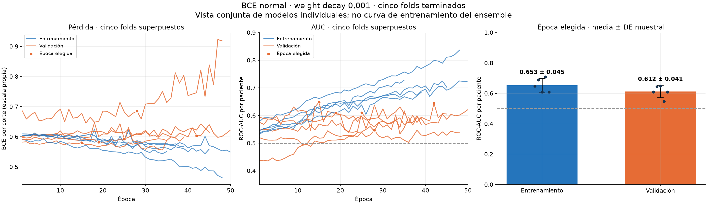
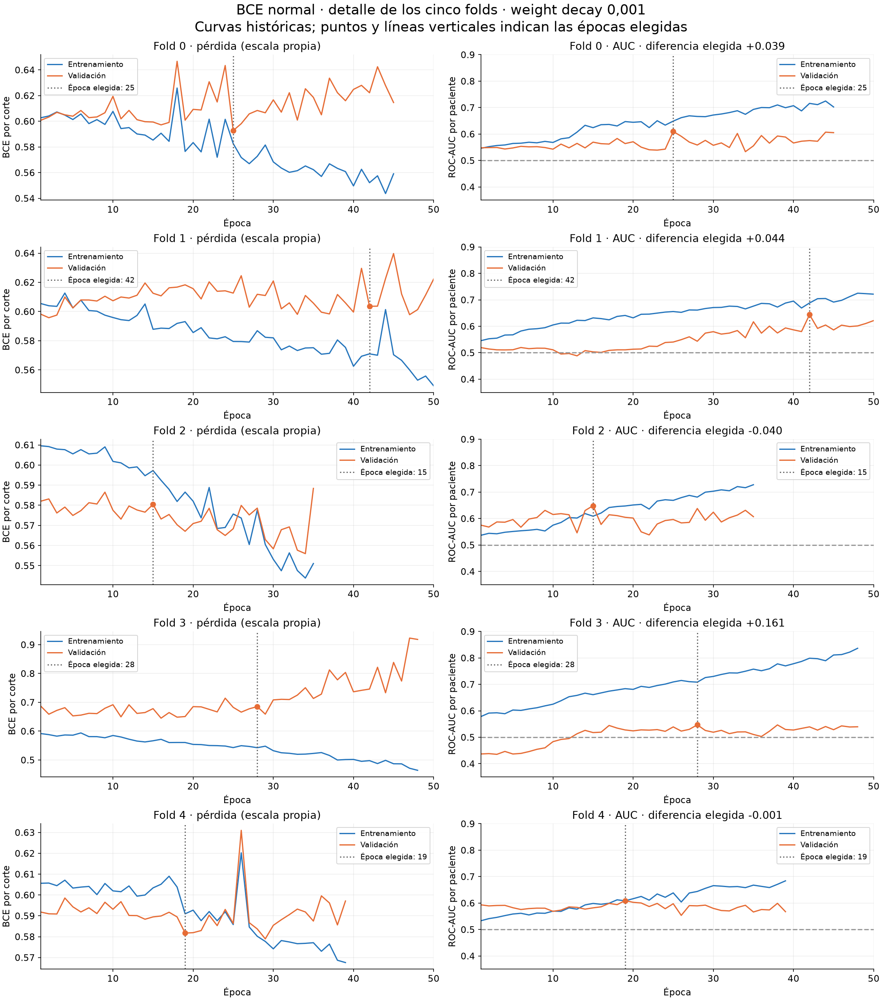
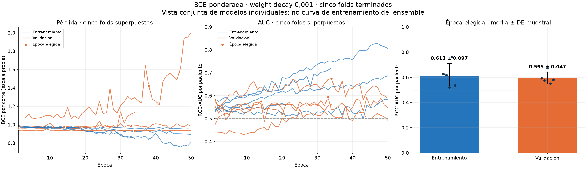
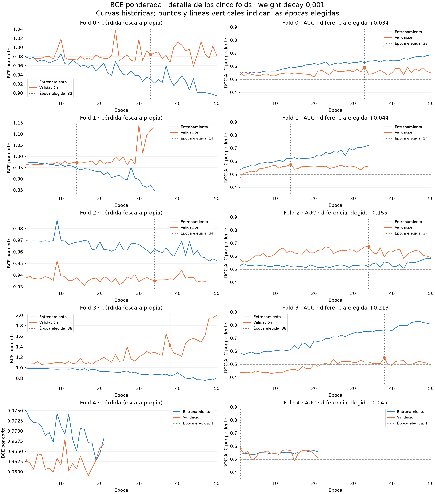
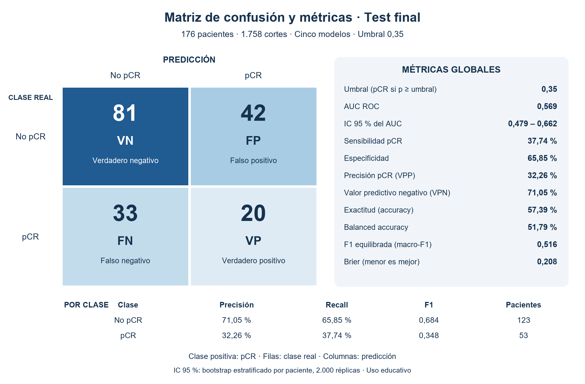
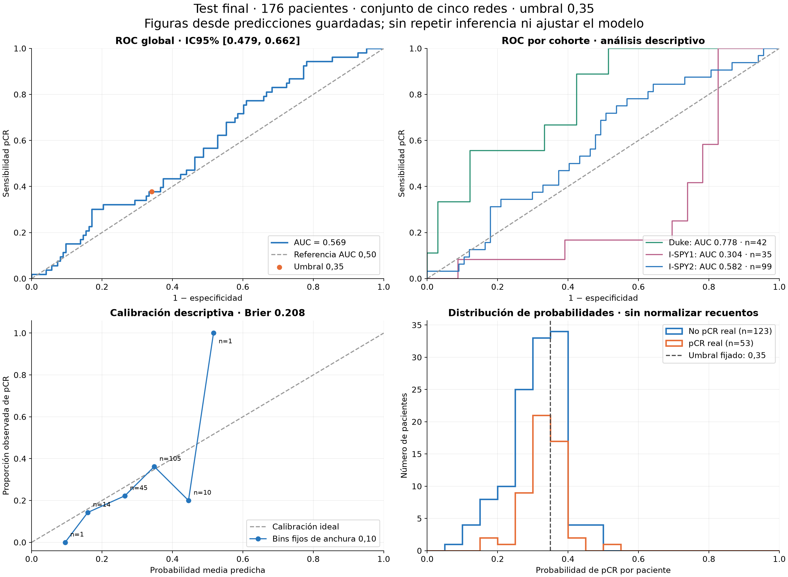

Predecir una respuesta futura
pCR significa que, tras el tratamiento, no queda tumor invasivo según la definición de respuesta del caso. Detectar realce en una resonancia no equivale a saber si habrá pCR.
Conocer la entrada →Una CNN propia analiza tres fases de resonancia de mama anteriores al tratamiento para estimar si una paciente alcanzará respuesta patológica completa (pCR).
Esta web reúne los datos, el diseño, las decisiones y los resultados del trabajo. Puedes recorrer la investigación o probar el modelo con tus propias imágenes compatibles.
pCR significa que, tras el tratamiento, no queda tumor invasivo según la definición de respuesta del caso. Detectar realce en una resonancia no equivale a saber si habrá pCR.
Conocer la entrada →Seis convoluciones, entrenamiento desde cero y cinco redes de la misma arquitectura. Sus probabilidades se promedian para producir el resultado final.
Explorar el modelo →La evaluación final muestra discriminación global débil y diferencias importantes entre cohortes. Las limitaciones forman parte del resultado del trabajo.
Consultar resultados →Una paciente aporta varios cortes. Cada corte contiene tres imágenes temporales de la misma resonancia; los cortes de una paciente no son observaciones independientes.
La referencia previa a la administración del contraste.
Permite observar el cambio inicial de intensidad respecto a PRE.
Aporta información de la evolución temporal posterior.
La entrada se apila siempre en orden PRE/EARLY/LATE. No son canales RGB: no se aplica normalización ImageNet ni transformaciones de color. El realce mostrado en la app es EARLY − PRE, calculado en coma flotante para conservar valores negativos.
Se revisaron fases, realce, histogramas y normalización en el trabajo exploratorio. No se puede certificar retrospectivamente que toda esa revisión precediera a programar: parte del análisis visual fue posterior.
| Partición | Pacientes | Cortes | Uso |
|---|---|---|---|
| Desarrollo | 1.097 | 10.945 | Entrenamiento y validación en cinco folds |
| Test público reservado | 176 | 1.758 | Evaluación final una vez |
| Validación privada docente | 177 | No utilizada | Prueba externa del profesor |
En desarrollo hay 322 pCR (29,35 %) y 775 no-pCR. Por eso la exactitud aislada puede engañar: predecir siempre la clase mayoritaria consigue muchos aciertos sin detectar ninguna pCR.
| Cohorte | Pacientes | pCR | Prevalencia |
|---|---|---|---|
| Duke | 209 | 44 | 21,05 % |
| I-SPY1 | 104 | 26 | 25,00 % |
| I-SPY2 | 784 | 252 | 32,14 % |
Las cohortes difieren en adquisición, población y selección de cortes. I-SPY prioriza cortes por área tumoral; Duke usa cortes centrales. Los índices de máscara del volumen original no se reaplican a los PNG recortados.
Se respetan los cinco folds docentes. En cada entrenamiento, cuatro sirven para aprender y el restante para validar. Todos los cortes de una paciente permanecen juntos.
Se comprobaron particiones sin solapamiento, etiquetas consistentes y una única validación por paciente. Test no participó en la selección.
PNG grises de 8 bits, preparados con una ventana conjunta para conservar la relación entre fases. El modelo usa píxeles/255 y estadísticas calculadas solo con train.
La app admite otros tamaños compatibles, sin redimensionar. Un cambio de encuadre o escala puede alterar el resultado aunque el archivo sea técnicamente válido.
La arquitectura se diseñó y entrenó desde cero. No se utilizaron redes de catálogo ni pesos preentrenados.
La CNN final se entrenó utilizando únicamente imágenes como entrada: las fases PRE, EARLY y LATE. No incorpora variables clínicas como edad, menopausia o estado de los receptores hormonales. La respuesta pCR se utiliza como etiqueta de aprendizaje, no como entrada del modelo.

117.329 parámetros por red. Seis convoluciones con kernel 3×3 y padding 1. Los tamaños siguientes corresponden a una entrada 256×256.
| Etapa | Operaciones | Salida | Parámetros |
|---|---|---|---|
| Bloque 1 | Conv 3→16, ReLU; Conv 16→16, ReLU; MaxPool 2 | 16 × 128 × 128 | 2.768 |
| Bloque 2 | Conv 16→32, ReLU; Conv 32→32, ReLU; MaxPool 2 | 32 × 64 × 64 | 13.888 |
| Bloque 3 | Conv 32→64, ReLU; MaxPool 2 | 64 × 32 × 32 | 18.496 |
| Bloque 4 | Conv 64→128, ReLU; MaxPool 2 | 128 × 16 × 16 | 73.856 |
| GAP | Media espacial de cada mapa | 128 | 0 |
| Cabeza | Densa 128→64, ReLU, dropout 0,2 | 64 | 8.256 |
| Salida | Densa 64→1 | 1 logit | 65 |
Las convoluciones extraen patrones locales; los poolings reducen resolución y coste; GAP evita una capa densa dependiente del tamaño espacial. Dropout y weight decay introducen regularización. Esto justifica el diseño, pero no demuestra que cada componente sea óptimo.
Inicialización Kaiming normal en convoluciones y Xavier uniforme en densas; sesgos a cero. Sin BatchNorm, atención ni variables clínicas en la candidata final.
La validación cruzada produjo cinco versiones de la misma red, cada una entrenada con cuatro folds. Se conserva el mejor checkpoint de cada una: épocas 25, 42, 15, 28 y 19. No se volvió a entrenar una red única al cerrar el trabajo.
Se promedian probabilidades, no pesos, logits ni votos. La app actual procesa un triplete de un corte; no presenta ese resultado como si hubiera recibido todos los cortes de una paciente.
Se divide el PNG entre 255. Después cada red aplica su propia media y desviación de train, comunes a las tres fases e incluyendo el fondo. No se recalculan con la imagen nueva.
La normalización, sigmoid y promedio de redes están incorporados al archivo ONNX. Así el navegador reproduce el procedimiento de Python.
GAP permite H y W distintos de 256; los cuatro poolings exigen al menos 16 píxeles por lado. La app conserva el tamaño nativo, con límites de recursos.
Las pruebas sintéticas incluyeron 256×256, 244×244, 31×49, 257×319 y 16×16. Compatibilidad de forma no significa rendimiento validado en esos tamaños.
Las decisiones se tomaron con desarrollo y validación. El test se abrió después de cerrar los pesos, la agregación y el umbral.
| Optimizador | Adam, no AdamW | Tasa de aprendizaje | 0,001 constante; sin scheduler |
|---|---|---|---|
| Pérdida elegida | BCE normal por corte | Weight decay | 0,001 |
| Lote | 64 cortes | Semilla | 42 |
| Máximo | 50 épocas | Parada | Paciencia 20, mínimo 10 épocas |
| Selección | Máximo AUC de validación; mejora estricta | Aumento | Volteo horizontal conjunto, p=0,5, solo train |
Se guarda la primera época que alcanza el máximo. Entrenar hasta 50 no implica usar la época 50. El mínimo de 10 para detenerse no impide seleccionar un checkpoint anterior.
La evaluación desactiva dropout y gradientes. Se conservan configuración, particiones, semillas, normalización y hashes de pesos. El test se ejecutó con CUDA, Python 3.12.14 y PyTorch 2.14.0+cu126; no se promete identidad bit a bit entre plataformas.
Comparación de la misma arquitectura y weight decay 0,001 en cinco folds. La pérdida ponderada usa N₀/N₁ de los cortes de train de cada fold para aumentar el coste de equivocarse sobre pCR. AUC de entrenamiento y validación en la época elegida de cada fold, con media ± desviación estándar muestral (DE). El entrenamiento mide el rendimiento sobre pacientes usados para aprender; la validación, sobre pacientes excluidos del entrenamiento de ese fold. El AUC no depende de un umbral. Sensibilidad, especificidad, Macro-F1 y FP/FN corresponden a validación OOF con un umbral común de 0,35:
| Métrica | BCE normal | BCE ponderada |
|---|---|---|
| AUC de entrenamiento por fold, media ± DE | 0,653 ± 0,045 | 0,613 ± 0,097 |
| AUC de validación por fold, media ± DE | 0,612 ± 0,041 | 0,595 ± 0,047 |
| Diferencia media AUC entrenamiento − validación | 0,041 | 0,018 |
| AUC de validación OOF agrupada | 0,589 | 0,558 |
| Sensibilidad pCR | 47,20 % | 90,99 % |
| Especificidad | 68,52 % | 8,65 % |
| Macro-F1 | 0,571 | 0,298 |
| FP / FN | 244 / 170 | 708 / 29 |
Validación OOF agrupada: 1.097 pacientes, cada una evaluada por el modelo del fold que no la utilizó para entrenar. Umbral 0,35; clase positiva: pCR. Filas: resultado real. Columnas: predicción. Estas matrices corresponden a validación, no al test final.
| Resultado real | Predice no pCR | Predice pCR |
|---|---|---|
| No pCR | VN: 531 | FP: 244 |
| pCR | FN: 170 | VP: 152 |
| Resultado real | Predice no pCR | Predice pCR |
|---|---|---|
| No pCR | VN: 67 | FP: 708 |
| pCR | FN: 29 | VP: 293 |
VN: verdadero negativo · FP: falso positivo · FN: falso negativo · VP: verdadero positivo. La ponderada reduce los FN de 170 a 29, pero aumenta los FP de 244 a 708.
Decisión: mantener la normal. A 0,35 ofrece mejor equilibrio. La ponderada detecta más pCR, pero clasifica 1.001 de 1.097 pacientes como positivas. La ponderación también cambia la escala de probabilidades; el mismo umbral no es necesariamente el mismo punto operativo.
Hubo comparación previa con weight decay 0,0001: AUC media normal 0,61174 y ponderada 0,60786. La normal con 0,001 prácticamente empata en AUC, pero su gap medio train−validación baja de 0,12730 a 0,04084. No se afirma superioridad estadística ni se atribuyen cambios de varios factores a uno solo.
Train y validación se muestran juntos. El fold 3 es el más problemático: gap de AUC de 0,161 en la época elegida y pérdida de validación creciente al seguir entrenando. Regularización y selección de checkpoints no eliminan el sobreajuste.




Se compararon 41 umbrales, de 0,20 a 0,60 en pasos de 0,01, con predicciones OOF: cada paciente se predice usando solo la red que no la vio en entrenamiento. 0,35 obtuvo la mayor balanced accuracy (0,579) y macro-F1 (0,571) de esa rejilla.
| Umbral | Sensibilidad | Especificidad | FP | FN |
|---|---|---|---|---|
| 0,30 | 73,91 % | 35,23 % | 502 | 84 |
| 0,34 | 55,28 % | 58,97 % | 318 | 144 |
| 0,35 | 47,20 % | 68,52 % | 244 | 170 |
| 0,36 | 37,58 % | 75,35 % | 191 | 201 |
| 0,40 | 20,50 % | 87,10 % | 100 | 256 |
El criterio académico da igual peso a sensibilidad y especificidad. No fija una prioridad clínica: un FP anuncia respuesta completa cuando queda enfermedad; un FN no identifica una respuesta completa. En una hipotética desescalada, los FP serían especialmente preocupantes, pero esta app no se destina a ese uso.
Los mismos folds sirvieron para explorar modelos, seleccionar épocas y umbral. Existe riesgo de optimismo; no es validación cruzada anidada.
Test completo: 176 pacientes, 1.758 cortes. Cinco modelos conservados, umbral 0,35 y media por paciente. No se ajustó el modelo tras ver este resultado.

| Clase | Precisión | Recall | F1 | Pacientes |
|---|---|---|---|---|
| No pCR | 71,05 % | 65,85 % | 0,684 | 123 |
| pCR | 32,26 % | 37,74 % | 0,348 | 53 |
| Métrica | Modelo | Siempre no pCR |
|---|---|---|
| Exactitud | 57,39 % | 69,89 % |
| Balanced accuracy | 51,79 % | 50,00 % |
| Macro-F1 | 0,516 | 0,411 |
| Sensibilidad pCR | 37,74 % | 0 % |
| AUC | 0,569 | 0,500 |
El modelo detecta algunas pCR y mejora macro-F1, pero pierde exactitud frente a la mayoría. La mejora de balanced accuracy es de solo 1,79 puntos porcentuales.
| Cohorte | Pacientes (pCR) | AUC [IC95 %] | Sensibilidad | Especificidad |
|---|---|---|---|---|
| Duke | 42 (9) | 0,778 [0,613–0,919] | 55,56 % | 69,70 % |
| I-SPY1 | 35 (12) | 0,304 [0,123–0,493] | 16,67 % | 60,87 % |
| I-SPY2 | 99 (32) | 0,582 [0,450–0,696] | 40,63 % | 65,67 % |
Duke no representa por sí sola el resultado del modelo. I-SPY1 muestra una discriminación especialmente desfavorable. Son análisis descriptivos de muestras pequeñas y múltiples cohortes; no identifican una causa ni constituyen un contraste formal entre ellas.

Brier: 0,208. En el intervalo de probabilidad 0,30–0,40 hay 105 pacientes: media predicha 34,84 % y pCR observada 36,19 %. En 0,40–0,50 solo hay 10 pacientes: media 44,55 % y frecuencia 20 %. Los extremos con una paciente no permiten conclusiones robustas.
IC95 % del AUC mediante bootstrap percentil estratificado por paciente: 2.000 réplicas, semilla 42. Mantiene fijo el predictor y no incluye incertidumbre por selección o entrenamiento. No se remuestrean cortes como si fueran pacientes independientes.
Se revisaron 12 casos de test: un FP y un FN cercanos y alejados del umbral por cada cohorte, mostrando un corte axial mediano y sus tres fases. Se utilizó la probabilidad ya guardada por paciente.
Hay realce visible en ambos tipos de error y diferencias de encuadre. Un FN alejado tenía probabilidad aproximada 0,152 pese a mostrar realce focal. Eso no explica causalmente el error: el modelo predice respuesta futura y el resultado agrega todos los cortes.
Selección deliberada, no muestra representativa de todos los fallos ni diagnóstico radiológico. Se revisaron también 12 ejemplos de validación.
Harían falta validación externa, protocolos comparables, evaluación prospectiva y análisis más amplios antes de estudiar utilidad clínica.
El valor académico está en construir una arquitectura propia, controlar la partición por paciente, comparar decisiones y documentar un test reservado. La conclusión predictiva es modesta y se presenta sin cambiar el modelo para mejorar el resultado conocido.
Carga PRE, EARLY y LATE de un mismo corte. No necesitas normalizarlas manualmente: la app aplica el procedimiento fijado.
Predicción basada exclusivamente en imágenes. El modelo no recibe ni combina variables clínicas de la paciente.
PRE, EARLY y LATE del mismo corte, alineadas y con igual tamaño.
PNG en gris de 8 bits · Hasta 16 MiB por fase · De 16 píxeles por lado a 1.048.576 píxeles en total. Se conserva el tamaño original.
Selecciona las tres fases para comenzar.
Grad-CAM destaca regiones asociadas a la puntuación de la clase seleccionada. Es una visualización aproximada: no delimita el tumor ni demuestra una explicación clínica.
Amarillo y rojo: mayor intensidad relativa del mapa. Escala normalizada para cada clase y corte, no comparable entre pacientes. Cambiar la fase solo cambia el fondo: no mide la contribución individual de PRE, EARLY y LATE.
Se calcula un Grad-CAM por red sobre la salida del último bloque convolucional, después del max-pooling y antes del promedio espacial. El objetivo es p(pCR) para clase 1 y 1 − p(pCR) para clase 0. Se promedian los cinco mapas positivos sin normalizar cada red por separado; el resultado se normaliza para visualizarlo y se amplía mediante interpolación bilineal. En una entrada de 256 × 256, la rejilla original es de 16 × 16. La clase inicial es la predicha con umbral 0,35; el mapa no explica por sí solo ese umbral ni toda la probabilidad.
Un mapa uniforme, vacío, de intensidad numérica mínima (máximo ≤ 10⁻⁸) o con un eje de una sola celda no permite localizar regiones. La visualización depende de la capa escogida y puede destacar fondo o artefactos. Método Grad-CAM (Selvaraju et al.).
Diferencia EARLY − PRE. Rojo: aumento de intensidad; azul: disminución; blanco: sin cambio.
Escala fija de −1 a +1. No es una localización del tumor ni un mapa de explicación del modelo.
Comprueba que las tres fases pertenecen al mismo corte y paciente, están alineadas y en el orden correcto. La app detecta formatos, tamaños discordantes y duplicados exactos, pero no puede certificar esa correspondencia anatómica.
Un resultado mayor o igual a 35 % se etiqueta pCR. El porcentaje es una salida del modelo, no una certeza sobre la respuesta. Consulta los resultados y limitaciones antes de interpretarlo.
Se distinguen el origen de los datos, los requisitos docentes y las decisiones tomadas en este trabajo.
Consultar el artículo original →
Describe el dataset original 3D, no un benchmark directamente comparable de esta CNN sobre el subconjunto docente de PNG. Sus 2.070 pacientes no son las 1.097 de desarrollo usadas aquí.
Exigen CNN propia desde cero, separación por paciente, comparación BCE normal/ponderada, decisiones justificadas y aplicación accesible por URL. El subconjunto docente exporta PNG de 8 bits con ventana conjunta; se excluyeron dos pacientes Duke por ausencia de fase tardía.
Los IC de AUC, revisión adicional de calibración y ampliación a tamaños distintos de 256×256 forman parte del alcance acordado del proyecto. No se presentan como citas literales de todos los requisitos docentes.
Estos trabajos aportan contexto, no una clasificación directa de modelos: cambian las entradas, la población y la evaluación. El artículo descriptor de BreastDCEDL explica los datos; no es un resultado predictivo de nuestra CNN.
| Trabajo | Datos y entrada | Resultado comunicado | Límite de la comparación |
|---|---|---|---|
| Este proyecto | 1.097 pacientes de desarrollo; test de 176. Tres fases de imagen previas al tratamiento, CNN 2D propia, sin variables clínicas. | AUC de validación 0,612 ± 0,041 (DE entre folds). Test: 0,569 [IC95 %: 0,479–0,662]. | Test reservado de cohortes presentes en desarrollo; no validación en una cohorte completamente nueva. |
| Ha et al. · 2019 | 141 pacientes; resonancia previa al tratamiento y recortes tumorales segmentados. CNN de diez convoluciones. | Exactitud global del 88 % para tres clases de respuesta. | Clasifica respuesta completa, parcial y ausencia de respuesta/progresión. Esa exactitud no es un AUC binario ni se compara directamente con nuestro test. |
| Nishizawa et al. · 2025 | I-SPY2: 660 pacientes; validación externa I-SPY1: 114. Volúmenes 3D antes y después del tratamiento; estudia imagen sola y fusión clínica. | Solo MRI: AUC interna 0,68 ± 0,03; externa 0,70 ± 0,04. Fusión: 0,73 ± 0,04 y 0,71 ± 0,02, respectivamente (media ± DE entre folds). | Dispone de imágenes posteriores al tratamiento, información que este proyecto no utiliza. Las fases del contraste no equivalen a momentos del tratamiento. |
| Vision Transformer for Pretreatment Prediction of Pathologic Complete Response in Multi-center Breast DCE-MRI | BreastDCEDL, tres fases previas al tratamiento y modelos preentrenados en ImageNet. Test comunicado: 175 pacientes. | ViT: AUC 0,72 [IC95 %: 0,64–0,80]; sensibilidad 0,27 y especificidad 0,96. | Referencia basada en el resumen indexado. Emplea transferencia y mapea fases a RGB; nuestro diseño es desde cero y temporal. El test difiere (175 frente a 176): no se ha comprobado equivalencia paciente a paciente. |
Interpretación: nuestro AUC final es inferior a los AUC citados, pero estas diferencias no aíslan el efecto de la arquitectura ni prueban superioridad estadística. No podemos atribuirlas solo al tamaño de los datos, al uso de clínica o al preentrenamiento. Esta revisión no modifica el predictor ni reabre la selección con el test.
Fuentes primarias enlazadas en cada fila; consulta: 28 de octubre de 2026. Se distingue media ± DE de intervalo de confianza. No se ha realizado una revisión sistemática.
Entrenamiento en PyTorch; conversión sin reentrenar ni cuantizar a ONNX. ONNX Runtime Web 1.31.1 ejecuta las cinco redes en CPU mediante WebAssembly. El modelo exportado incorpora normalización, sigmoid y media de probabilidades.
Exportación ONNX en PyTorch · ONNX Runtime Web · Licencia del runtime
Trabajo académico individual de Álvaro Santamaría Antón. Datos de referencia desidentificados derivados de BreastDCEDL, descritos en el material docente bajo licencia CC BY-NC 4.0. No se publican imágenes ni etiquetas de la validación privada del profesor.
La app no envía ni persiste las imágenes cargadas. La descarga del resultado contiene probabilidad, clase, tamaño, umbral, tiempo y huella del modelo, sin incluir las imágenes. El servidor de alojamiento puede mantener sus registros habituales de acceso.
Esta web explica el trabajo y ofrece una demostración educativa. No es un dispositivo médico.